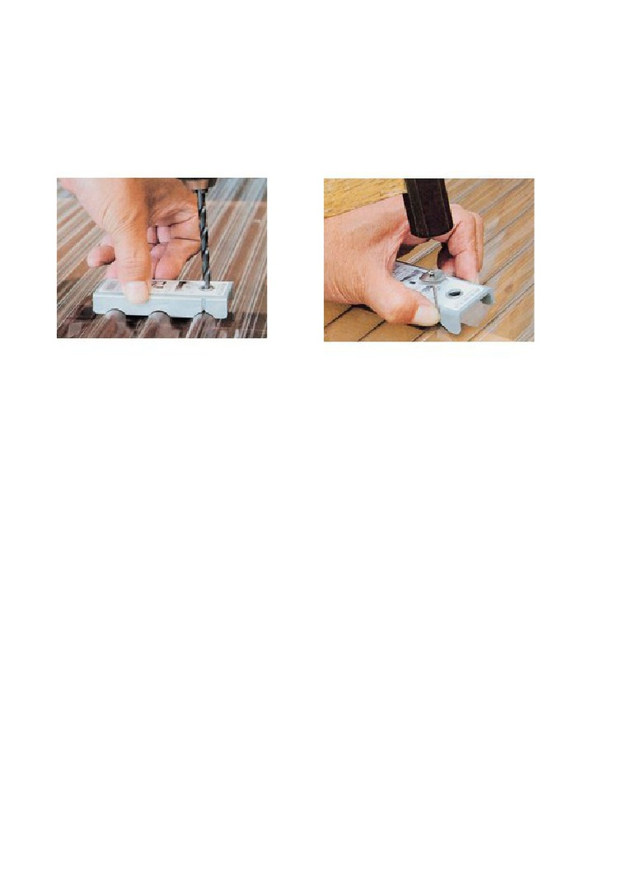

適当な木片に「波板パッキン」の切れ端を接着し、パッキンの「山」にあたる位置に、穴をあけたも
の。
（ドリルビット径は４ミリを使うので、それよりやや大きい穴とする）
□追加（引用）
重ね代の問題が自己解決したので報告します。
ポリカの横方向の重ね代。これは 2 山半か 3 山半という説が多いです。
もっと重ねたらどうか。強度を取れるから重ねすぎたっていいじゃないかという問題。
どうもこれは理由があって重ねすぎてはいけないということらしいです。
理由はカビやコケの問題。
重ねすぎると乾かない。水はどうしても毛細管現象で吸うから重ね代の部分は濡れる。
ここに土ぼこりなどが入り込み、カビ、果てはコケが生えたりして屋根が痛む元となるから。
＊＊＊＊＊＊＊＊＊＊＊＊＊
＊＊＊＊＊＊＊＊＊＊＊＊＊
波板を設置するためには、ポイントがあります。それは、「クギを打つ深さ」です。
波板を固定するクギは、浅くても深くてもいけません。打ち込みが浅いと、クギと波板の間から水漏
れが起こります。逆に深すぎると、波板によけいな負荷がかかり、劣化を早める原因になります。
□深さ。